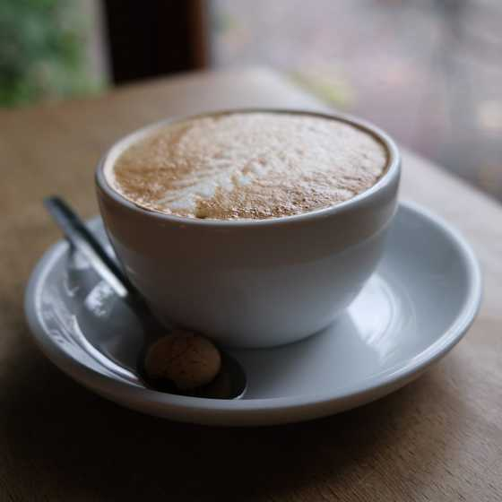

石川県小松市日の出町 / 小松駅前
KMQ COFFEE
小松空港の三文字を名に掲げた、駅前のコーヒースタンド。一杯から、コーヒーの旅へ。
Instagram場所を見る
ABOUT
旅の入口になるカフェ
KMQ COFFEEは、福岡発の人気コーヒーショップ「FUK COFFEE」の北陸初の店として、2026年4月12日に小松駅前の「ウレシャス小松」1階にオープンしました。
店名の「KMQ」は小松空港の空港コードに由来するとされ、「コーヒーの旅」をコンセプトに、自家焙煎のスペシャリティコーヒーを提供しています。
オーナー個人の想いは確認できていないため記載していません。


MENU
ドリンクとスイーツ
確認できた範囲のご紹介です。価格・詳細は準備中です。




VOICE
口コミ
イメージ例
駅に着いてすぐ立ち寄れるのがうれしい。朝のコーヒーで旅の気分になりました。
イメージ例
ラテの香りが良く、プリンとの組み合わせが楽しみで通っています。
イメージ例
窓の外を眺めながら、ゆっくり一杯。待ち合わせにも使いやすいです。
口コミはイメージ例(制作側の創作)で、実際のお客様の声ではありません。


ACCESS
アクセス・店舗情報
- 住所: 〒923-0868 石川県小松市日の出町1丁目100(ウレシャス小松1階)
- 営業時間: 8:00〜19:00(公開資料による。変更は Instagram でご確認ください)
- 定休日・価格・メニュー詳細: 準備中
- 電話: 準備中
- Instagram: @kmq.coffee